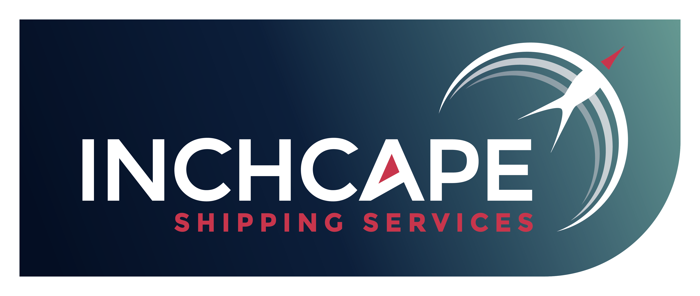
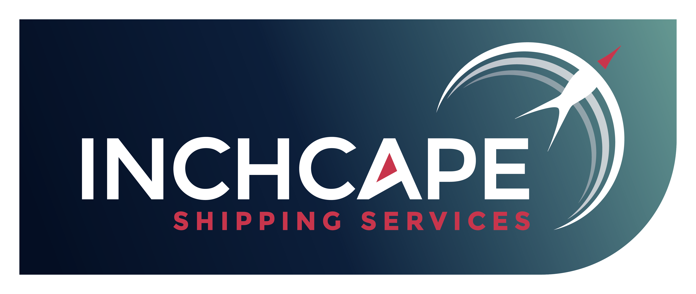

Alakar Harijan
Data Analyst


About Me
With a keen interest in data analytics, an individual from a management background ventured into the field of data analysis. The journey was indeed challenging, but as a wise person once said, "When the why is clear, the how is easy."
Through self-learning, excellent mentorship, and the help of some intelligent individuals, I was able to acquire analytical skills and master various analytical tools. Starting with MS Excel and progressing to Python, my skillset expanded significantly over the years. Each step of the journey brought new insights and experiences that were both rewarding and enlightening.
The support from mentors and peers was invaluable in overcoming the hurdles faced along the way. Looking back, the past seven years have been a fantastic journey of growth and learning. I am grateful for the opportunities and the knowledge gained, which have paved the way for a successful career in data analytics.
Age: 36
Residence: Ulwe, Navi Mumbai
Address: 404, Manas Shubahan, Sector 9, Ulwe
e-mail: alakar_harijan@outlook.com
Phone: 91360 05288
What I Do

Data Analysis
In my current role as a Data Analyst, I am involved in data collection, data transformation, automation, report generation, and publishing reports to various stakeholders. I achieve these tasks using tools such as PowerPoint, Excel, Power Query, Power BI, and to some extent, Python.
Below are some of the tasks I perform:
-Track KPIs and improve performance.
-Track vessels and keep our clients updated on vessel positions.
-Create dashboards to measure the performance of the billing process.
-Identify key players in the market so that our commercial team can approach the right customers.

Data Designing
Analysis and automation become easy and quick to complete when data collection is properly organized. Time-consuming and effort-intensive activities can thus be eliminated. Therefore, I believe in setting up my own data collection systems in the form of modern web pages and web forms with pre-validation setups.
I utilize my knowledge in front-end technologies such as HTML, CSS, and JavaScript, as well as back-end technologies including PHP, Python, Node.js, React.js, and others.
By creating these custom solutions, I ensure that the data collection process is efficient and reliable, ultimately leading to better analysis and insights. This comprehensive approach not only streamlines my workflow but also enhances the accuracy and quality of the data collected.

Mentoring
As a mentor, I develop leadership and communication skills. Teaching others not only reinforces my own knowledge but also reveals new perspectives. I mentor students and working professionals in analytical tools and techniques. It's a way to give back to our community.
By sharing my expertise, I help them grow and achieve their goals. The satisfaction of seeing their progress is immensely rewarding. Mentoring also allows me to stay current with new trends and technologies in the field, ensuring that both I and my mentees remain at the forefront of industry developments.

Freelanceing
As a seasoned freelance Data Analyst and Developer, I leverage expertise in Power BI and Excel to deliver actionable insights for diverse clients, enhancing business decision-making capabilities.
My proficiency in developing scalable and interactive dashboards has consistently improved data visualization and user engagement. Through successful collaborations, I've honed my ability to understand client requirements and deliver tailored solutions. With a strong foundation in data analysis, visualization, and web development, I ensure high-quality project delivery.
What I Can Give
As a data analyst with over six years of experience, I bring a robust skill set and a deep understanding of both analytical tools and web technologies. My expertise includes:
Proficient in Excel, Power Query, and Power BI for creating insightful reports and dashboards.
Advanced knowledge of Python for data manipulation and analysis.
Skilled in front-end technologies (HTML, CSS, JavaScript) and back-end development (Node.js, React.js, PHP) for building modern,
responsive web applications.
Strong experience with SQL for database querying and management.
Ability to streamline workflows and automate processes to increase efficiency and accuracy.
Committed to mentoring peers and collaborating with cross-functional teams to drive data-driven decision-making.
Dedicated to staying updated with the latest tools and technologies to deliver innovative solutions.
Testimonials
Thank you for all your efforts taken to minimise the process with accuracy and timely manner. looking forward for more improvement areas which can be beneficial to S5 Agency World. Based on demonstration we have done on Friday I'm sure below will save lot of time for processing team.
Pravin Dongre
(Team Leader - S5 Agency World)

I extend my heartfelt appreciation for your exceptional work in completing the Power BI dashboards for our New Installation Sales business. Your dedication and attention to detail have truly paid off, resulting in a powerful tool that provides valuable insights and enhances our decision-making process.
Thank you for your hard work and for delivering such an outstanding solution. Your contributions are immensely valued, and we are excited to see the positive impact this will have on our operations.
Keep up the great work.
Abdul Kader
(Regional General Manager - TK Elevator India)
Happy Companies
 
